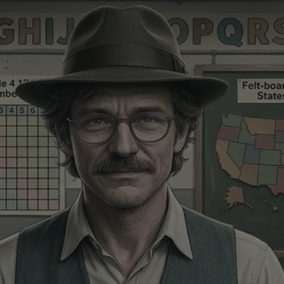
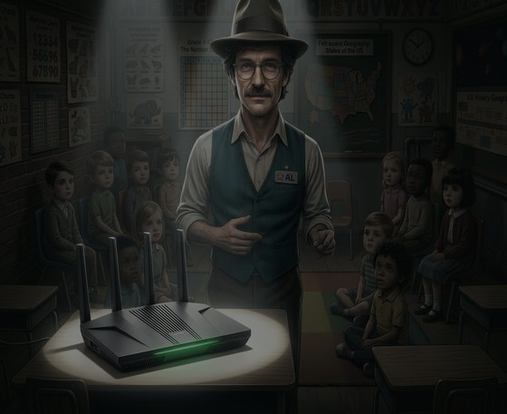

Haven here. Hello, boys and girls. I'm Haven, and this is Al. When we're not busy saving the planet, we come to homes like yours and we protect your network from IP42.
I do a lot. One of the things I do? Eliminate ads like this.IP42 is getting faster. Al (Haven's developer) can see that much — but seeing it is not the same as knowing which instance to shut down first, or in what order.
So he builds Haven an interface. It takes each running instance of IP42 and gives it a body: something with a shape, a distance and a bearing, that a person can put a crosshair on. What you are about to see is not the infection itself. This is the interface Al made so the infection could be triaged.
Backstory